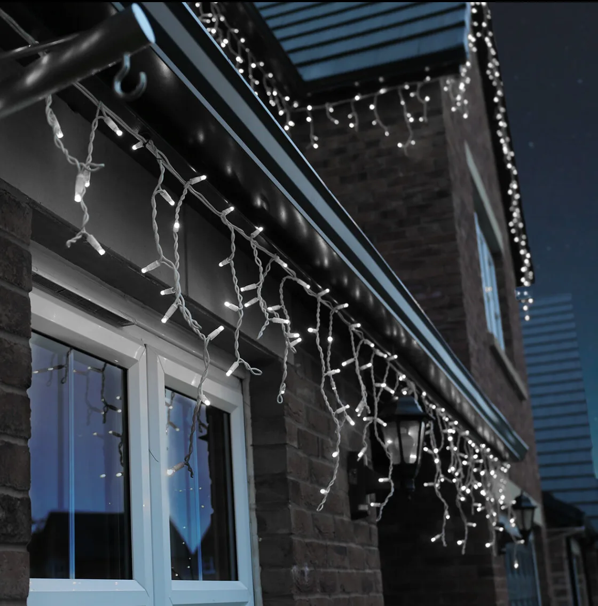

Browse All
10M Outdoor LED icicle lights - Connectable black rubber cable
These commercial quality icicle lights feature industry leading LED bulbs, available in either white or warm white. This set is connectable up to 300 metres (7,200 LEDs) and comes on a black rubber cable with built in connectors.
These are one of the best icicle lights available for commercial and large domestic displays. The design, materials and overall effect of our icicle lights has been perfected thanks to over 10 years of research and development.
These lights are manufactured using the latest construction processes including bulb sealing technology to ensure excellent durability for prolonged indoor or outdoor use. Our high quality LED icicle lights have unlimited uses, ideal for use on gutters, balconies, balustrades, cross street, fences and can also be used year round for parties, weddings and other special occasions.
As part of our mains voltage connectable lights system, you can continue to add more connectable lights to an existing starter cable. The lights are supplied in multiples of 2 metres and 5 metres, meaning if you order 24m, for example, you will receive four 5m lengths and two 2m lengths, ready to be connected together.
There are a variety of accessories available within our extensive mains voltage range, which are compatible with these string lights, such as extension cables, ring connectors and Y cord connectors.
Look out for the orange ConnectPro overlay - every item with this logo can be connected to these lights. Choose between our expansive range of Fairy Lights, Nets, Motifs and Curtains, all easily connected with our unique simple push and screw design.
These are one of the best icicle lights available for commercial and large domestic displays. The design, materials and overall effect of our icicle lights has been perfected thanks to over 10 years of research and development.
These lights are manufactured using the latest construction processes including bulb sealing technology to ensure excellent durability for prolonged indoor or outdoor use. Our high quality LED icicle lights have unlimited uses, ideal for use on gutters, balconies, balustrades, cross street, fences and can also be used year round for parties, weddings and other special occasions.
As part of our mains voltage connectable lights system, you can continue to add more connectable lights to an existing starter cable. The lights are supplied in multiples of 2 metres and 5 metres, meaning if you order 24m, for example, you will receive four 5m lengths and two 2m lengths, ready to be connected together.
There are a variety of accessories available within our extensive mains voltage range, which are compatible with these string lights, such as extension cables, ring connectors and Y cord connectors.
Look out for the orange ConnectPro overlay - every item with this logo can be connected to these lights. Choose between our expansive range of Fairy Lights, Nets, Motifs and Curtains, all easily connected with our unique simple push and screw design.
CategoryOther Equipment
RangeBrowse All
Weight0.5 kg
Tagsxmas light, fairylight, pealight, pea light, proconnect, pro connect